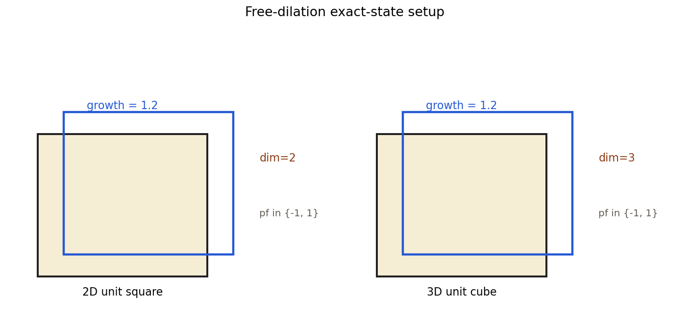
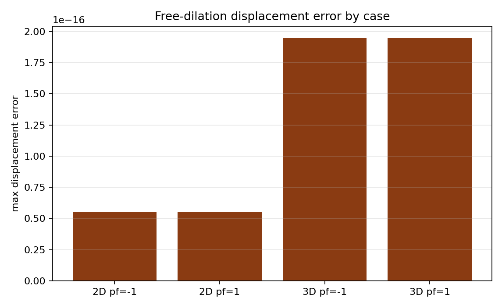
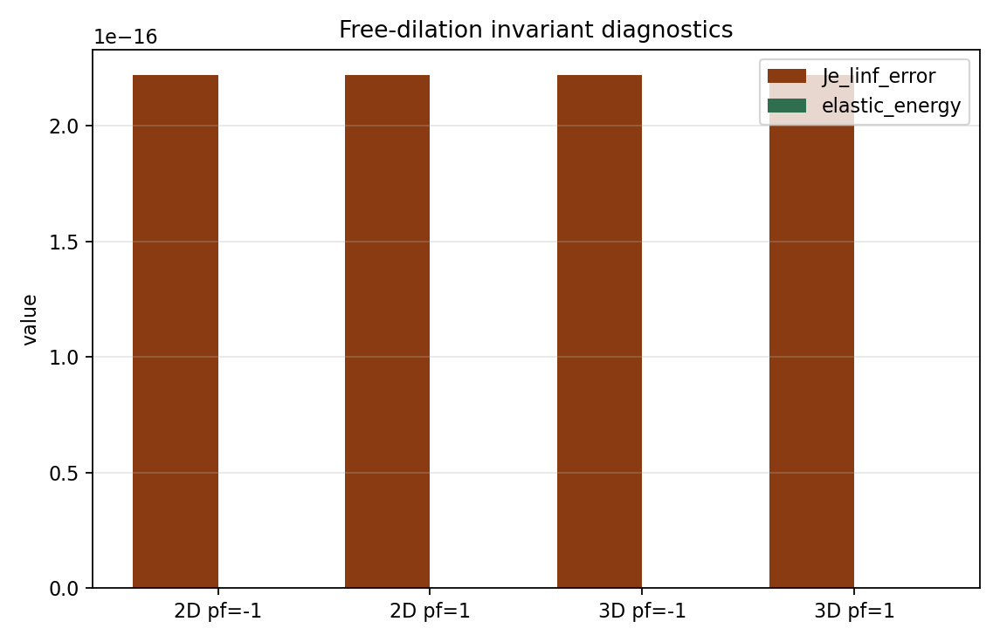
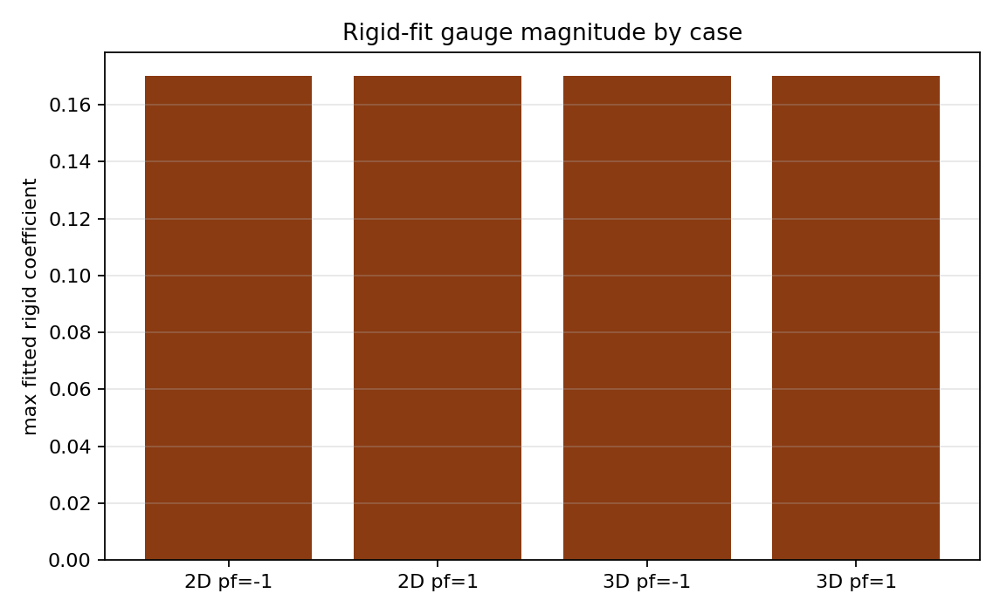

Benchmark
Growth-Only Free Dilation
Family: analytic-benchmarks
Pure-growth free-dilation exact-state check across 2D/3D and both pure phases.
Target and Success Criteria
target_kind: Analytic
Tier: full
Unknowns active: u, growth kinematics
Frozen terms: CH transport, hydraulic storage, external loading
Comparison grammar: Achieved / Target
Tickets: VV-007
What This Benchmark Verifies
This benchmark checks the exact homogeneous free-dilation state in pure phases, after removing rigid-body gauge motion.
Benchmark Narrative
Narrative
Physical Problem
A pure-phase body in 2D and 3D is initialized with the exact homogeneous growth-driven free-dilation displacement, then advanced one mechanics step with transport inactive.
Narrative
Target Definition
The target is the exact free-dilation state: after removing the fitted rigid gauge, displacement error and elastic strain invariants should remain near machine zero.
Narrative
Why These Observables
The schematic explains the exact-state setup, the displacement-error plot shows the raw per-case state error, the invariant plot summarizes Je and elastic-energy diagnostics, and the gauge plot makes the rigid-fit subtraction explicit.
Narrative
How To Read The Error
These are exact-state checks. Non-zero displacement or Je errors indicate growth kinematics or gauge handling drift, not a simple refinement issue.
Narrative
Reference Qualification
The exact displacement field and rigid-fit removal are defined directly in the benchmark harness, which computes the remaining error after subtracting rigid motion.
Narrative
Limitations
This page covers homogeneous pure-phase free dilation only. It does not exercise coupled transport or geometry-change dynamics.
worst_displacement_error
pass
Setup Schematic
figure

Setup schematic for the 2D/3D pure-phase free-dilation exact-state checks.
plots/setup-schematic.png
Raw Run Evidence
Extracted Observables
plot

Raw free-dilation displacement error by dimension and phase.
plots/displacement-error-by-case.png
Target Comparison
plot

Extracted Je and elastic-energy diagnostics for the free-dilation cases.
plots/invariant-errors-by-case.png
Error Summary
plot

Maximum fitted rigid-motion gauge coefficient removed from each case.
plots/rigid-fit-gauge-by-case.png
Scalar Summary
| Label | Value | Unit | Comparison | Threshold | Severity |
|---|---|---|---|---|---|
| worst_displacement_error | 1.94435e-16 | 0 | 0 | pass |
Evidence Table
| Label | Metric | Comparison | Threshold | Severity |
|---|---|---|---|---|
| worst_displacement_error | displacement_error | 1.94435e-16 | small | pass |
Series Overview
| Plot | Group | Observable | Case | Level | Target |
|---|---|---|---|---|---|
| free_dilation_0 | analytic_target | 2D pf=-1 | 2D | -1 | exact state |
| free_dilation_1 | analytic_target | 2D pf=1 | 2D | 1 | exact state |
| free_dilation_2 | analytic_target | 3D pf=-1 | 3D | -1 | exact state |
| free_dilation_3 | analytic_target | 3D pf=1 | 3D | 1 | exact state |
Cases
Case
case_1
2D pure phase -1.0 with growth 1.2.
Case
case_2
2D pure phase 1.0 with growth 1.2.
Case
case_3
3D pure phase -1.0 with growth 1.2.
Case
case_4
3D pure phase 1.0 with growth 1.2.